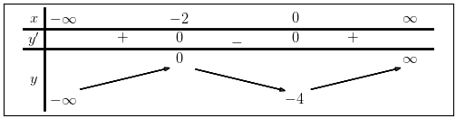
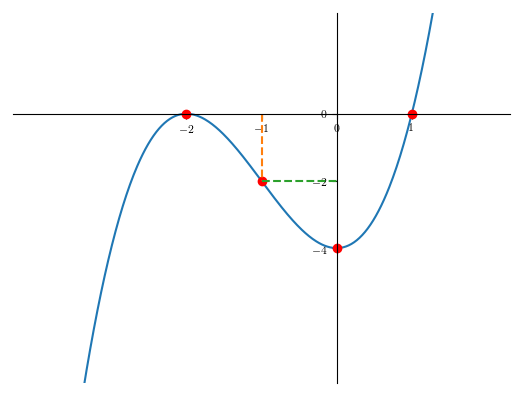

Khảo sát hàm số : \(f(x) = -4 + 3 x^{2} + x^{3}\)
Bước 1 : Tìm tập xác định của hàm số Hàm số là hàm đa thức nên luôn xác định trên tập số thực
Bước 2 : Tính đạo hàm và tìm nghiệm của đạo hàm hàm số Bước 2.1 : Tính đạo hàm của hàm số \(f'(x)=(-4 + 3 x^{2} + x^{3})'\)
Bước 2.2 : Tìm nghiệm của phương phương trình đạo hàm \(6 x + 3 x^{2} = 0\)
Bước 3 : Tìm giới hạn của hàm số tại vô cực \(lim_{x\to-\infty}-4 + 3 x^{2} + x^{3}=-\infty\)
Bước 4 : Vẽ bảng biến thiên 
Bước 5 : Vẽ đồ thị của hàm số 